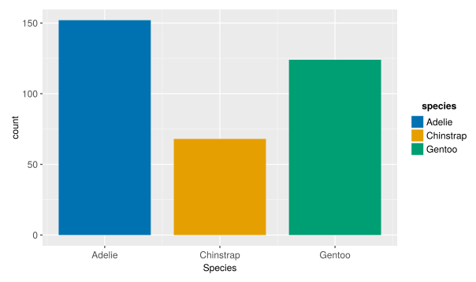

Code
using Tidier,TidierPlots
using DataFrames,CSV,Pipe
penguins =@pipe CSV.File("./data/penguine_data.csv")|>DataFrame|>dropmissing
@show penguins
ggplot(data = penguins) +
geom_bar(aes(x = :species,color=:species))+labs(x = "Species")penguins = 344×7 DataFrame
Row │ species island bill_length_mm bill_depth_mm flipper_length_mm body_mass_g sex
│ String15 String15 String7 String7 String3 String7 String7
─────┼──────────────────────────────────────────────────────────────────────────────────────────────
1 │ Adelie Torgersen 39.1 18.7 181 3750 male
2 │ Adelie Torgersen 39.5 17.4 186 3800 female
3 │ Adelie Torgersen 40.3 18 195 3250 female
4 │ Adelie Torgersen NA NA NA NA NA
5 │ Adelie Torgersen 36.7 19.3 193 3450 female
6 │ Adelie Torgersen 39.3 20.6 190 3650 male
7 │ Adelie Torgersen 38.9 17.8 181 3625 female
8 │ Adelie Torgersen 39.2 19.6 195 4675 male
9 │ Adelie Torgersen 34.1 18.1 193 3475 NA
10 │ Adelie Torgersen 42 20.2 190 4250 NA
11 │ Adelie Torgersen 37.8 17.1 186 3300 NA
12 │ Adelie Torgersen 37.8 17.3 180 3700 NA
13 │ Adelie Torgersen 41.1 17.6 182 3200 female
14 │ Adelie Torgersen 38.6 21.2 191 3800 male
15 │ Adelie Torgersen 34.6 21.1 198 4400 male
16 │ Adelie Torgersen 36.6 17.8 185 3700 female
17 │ Adelie Torgersen 38.7 19 195 3450 female
18 │ Adelie Torgersen 42.5 20.7 197 4500 male
19 │ Adelie Torgersen 34.4 18.4 184 3325 female
20 │ Adelie Torgersen 46 21.5 194 4200 male
21 │ Adelie Biscoe 37.8 18.3 174 3400 female
22 │ Adelie Biscoe 37.7 18.7 180 3600 male
23 │ Adelie Biscoe 35.9 19.2 189 3800 female
24 │ Adelie Biscoe 38.2 18.1 185 3950 male
25 │ Adelie Biscoe 38.8 17.2 180 3800 male
26 │ Adelie Biscoe 35.3 18.9 187 3800 female
27 │ Adelie Biscoe 40.6 18.6 183 3550 male
28 │ Adelie Biscoe 40.5 17.9 187 3200 female
29 │ Adelie Biscoe 37.9 18.6 172 3150 female
30 │ Adelie Biscoe 40.5 18.9 180 3950 male
31 │ Adelie Dream 39.5 16.7 178 3250 female
32 │ Adelie Dream 37.2 18.1 178 3900 male
33 │ Adelie Dream 39.5 17.8 188 3300 female
34 │ Adelie Dream 40.9 18.9 184 3900 male
35 │ Adelie Dream 36.4 17 195 3325 female
36 │ Adelie Dream 39.2 21.1 196 4150 male
37 │ Adelie Dream 38.8 20 190 3950 male
38 │ Adelie Dream 42.2 18.5 180 3550 female
39 │ Adelie Dream 37.6 19.3 181 3300 female
40 │ Adelie Dream 39.8 19.1 184 4650 male
41 │ Adelie Dream 36.5 18 182 3150 female
42 │ Adelie Dream 40.8 18.4 195 3900 male
43 │ Adelie Dream 36 18.5 186 3100 female
44 │ Adelie Dream 44.1 19.7 196 4400 male
45 │ Adelie Dream 37 16.9 185 3000 female
46 │ Adelie Dream 39.6 18.8 190 4600 male
47 │ Adelie Dream 41.1 19 182 3425 male
48 │ Adelie Dream 37.5 18.9 179 2975 NA
49 │ Adelie Dream 36 17.9 190 3450 female
50 │ Adelie Dream 42.3 21.2 191 4150 male
51 │ Adelie Biscoe 39.6 17.7 186 3500 female
52 │ Adelie Biscoe 40.1 18.9 188 4300 male
53 │ Adelie Biscoe 35 17.9 190 3450 female
54 │ Adelie Biscoe 42 19.5 200 4050 male
55 │ Adelie Biscoe 34.5 18.1 187 2900 female
56 │ Adelie Biscoe 41.4 18.6 191 3700 male
57 │ Adelie Biscoe 39 17.5 186 3550 female
58 │ Adelie Biscoe 40.6 18.8 193 3800 male
59 │ Adelie Biscoe 36.5 16.6 181 2850 female
60 │ Adelie Biscoe 37.6 19.1 194 3750 male
61 │ Adelie Biscoe 35.7 16.9 185 3150 female
62 │ Adelie Biscoe 41.3 21.1 195 4400 male
63 │ Adelie Biscoe 37.6 17 185 3600 female
64 │ Adelie Biscoe 41.1 18.2 192 4050 male
65 │ Adelie Biscoe 36.4 17.1 184 2850 female
66 │ Adelie Biscoe 41.6 18 192 3950 male
67 │ Adelie Biscoe 35.5 16.2 195 3350 female
68 │ Adelie Biscoe 41.1 19.1 188 4100 male
69 │ Adelie Torgersen 35.9 16.6 190 3050 female
70 │ Adelie Torgersen 41.8 19.4 198 4450 male
71 │ Adelie Torgersen 33.5 19 190 3600 female
72 │ Adelie Torgersen 39.7 18.4 190 3900 male
73 │ Adelie Torgersen 39.6 17.2 196 3550 female
74 │ Adelie Torgersen 45.8 18.9 197 4150 male
75 │ Adelie Torgersen 35.5 17.5 190 3700 female
76 │ Adelie Torgersen 42.8 18.5 195 4250 male
77 │ Adelie Torgersen 40.9 16.8 191 3700 female
78 │ Adelie Torgersen 37.2 19.4 184 3900 male
79 │ Adelie Torgersen 36.2 16.1 187 3550 female
80 │ Adelie Torgersen 42.1 19.1 195 4000 male
81 │ Adelie Torgersen 34.6 17.2 189 3200 female
82 │ Adelie Torgersen 42.9 17.6 196 4700 male
83 │ Adelie Torgersen 36.7 18.8 187 3800 female
84 │ Adelie Torgersen 35.1 19.4 193 4200 male
85 │ Adelie Dream 37.3 17.8 191 3350 female
86 │ Adelie Dream 41.3 20.3 194 3550 male
87 │ Adelie Dream 36.3 19.5 190 3800 male
88 │ Adelie Dream 36.9 18.6 189 3500 female
89 │ Adelie Dream 38.3 19.2 189 3950 male
90 │ Adelie Dream 38.9 18.8 190 3600 female
91 │ Adelie Dream 35.7 18 202 3550 female
92 │ Adelie Dream 41.1 18.1 205 4300 male
93 │ Adelie Dream 34 17.1 185 3400 female
94 │ Adelie Dream 39.6 18.1 186 4450 male
95 │ Adelie Dream 36.2 17.3 187 3300 female
96 │ Adelie Dream 40.8 18.9 208 4300 male
97 │ Adelie Dream 38.1 18.6 190 3700 female
98 │ Adelie Dream 40.3 18.5 196 4350 male
99 │ Adelie Dream 33.1 16.1 178 2900 female
100 │ Adelie Dream 43.2 18.5 192 4100 male
101 │ Adelie Biscoe 35 17.9 192 3725 female
102 │ Adelie Biscoe 41 20 203 4725 male
103 │ Adelie Biscoe 37.7 16 183 3075 female
104 │ Adelie Biscoe 37.8 20 190 4250 male
105 │ Adelie Biscoe 37.9 18.6 193 2925 female
106 │ Adelie Biscoe 39.7 18.9 184 3550 male
107 │ Adelie Biscoe 38.6 17.2 199 3750 female
108 │ Adelie Biscoe 38.2 20 190 3900 male
109 │ Adelie Biscoe 38.1 17 181 3175 female
110 │ Adelie Biscoe 43.2 19 197 4775 male
111 │ Adelie Biscoe 38.1 16.5 198 3825 female
112 │ Adelie Biscoe 45.6 20.3 191 4600 male
113 │ Adelie Biscoe 39.7 17.7 193 3200 female
114 │ Adelie Biscoe 42.2 19.5 197 4275 male
115 │ Adelie Biscoe 39.6 20.7 191 3900 female
116 │ Adelie Biscoe 42.7 18.3 196 4075 male
117 │ Adelie Torgersen 38.6 17 188 2900 female
118 │ Adelie Torgersen 37.3 20.5 199 3775 male
119 │ Adelie Torgersen 35.7 17 189 3350 female
120 │ Adelie Torgersen 41.1 18.6 189 3325 male
121 │ Adelie Torgersen 36.2 17.2 187 3150 female
122 │ Adelie Torgersen 37.7 19.8 198 3500 male
123 │ Adelie Torgersen 40.2 17 176 3450 female
124 │ Adelie Torgersen 41.4 18.5 202 3875 male
125 │ Adelie Torgersen 35.2 15.9 186 3050 female
126 │ Adelie Torgersen 40.6 19 199 4000 male
127 │ Adelie Torgersen 38.8 17.6 191 3275 female
128 │ Adelie Torgersen 41.5 18.3 195 4300 male
129 │ Adelie Torgersen 39 17.1 191 3050 female
130 │ Adelie Torgersen 44.1 18 210 4000 male
131 │ Adelie Torgersen 38.5 17.9 190 3325 female
132 │ Adelie Torgersen 43.1 19.2 197 3500 male
133 │ Adelie Dream 36.8 18.5 193 3500 female
134 │ Adelie Dream 37.5 18.5 199 4475 male
135 │ Adelie Dream 38.1 17.6 187 3425 female
136 │ Adelie Dream 41.1 17.5 190 3900 male
137 │ Adelie Dream 35.6 17.5 191 3175 female
138 │ Adelie Dream 40.2 20.1 200 3975 male
139 │ Adelie Dream 37 16.5 185 3400 female
140 │ Adelie Dream 39.7 17.9 193 4250 male
141 │ Adelie Dream 40.2 17.1 193 3400 female
142 │ Adelie Dream 40.6 17.2 187 3475 male
143 │ Adelie Dream 32.1 15.5 188 3050 female
144 │ Adelie Dream 40.7 17 190 3725 male
145 │ Adelie Dream 37.3 16.8 192 3000 female
146 │ Adelie Dream 39 18.7 185 3650 male
147 │ Adelie Dream 39.2 18.6 190 4250 male
148 │ Adelie Dream 36.6 18.4 184 3475 female
149 │ Adelie Dream 36 17.8 195 3450 female
150 │ Adelie Dream 37.8 18.1 193 3750 male
151 │ Adelie Dream 36 17.1 187 3700 female
152 │ Adelie Dream 41.5 18.5 201 4000 male
153 │ Gentoo Biscoe 46.1 13.2 211 4500 female
154 │ Gentoo Biscoe 50 16.3 230 5700 male
155 │ Gentoo Biscoe 48.7 14.1 210 4450 female
156 │ Gentoo Biscoe 50 15.2 218 5700 male
157 │ Gentoo Biscoe 47.6 14.5 215 5400 male
158 │ Gentoo Biscoe 46.5 13.5 210 4550 female
159 │ Gentoo Biscoe 45.4 14.6 211 4800 female
160 │ Gentoo Biscoe 46.7 15.3 219 5200 male
161 │ Gentoo Biscoe 43.3 13.4 209 4400 female
162 │ Gentoo Biscoe 46.8 15.4 215 5150 male
163 │ Gentoo Biscoe 40.9 13.7 214 4650 female
164 │ Gentoo Biscoe 49 16.1 216 5550 male
165 │ Gentoo Biscoe 45.5 13.7 214 4650 female
166 │ Gentoo Biscoe 48.4 14.6 213 5850 male
167 │ Gentoo Biscoe 45.8 14.6 210 4200 female
168 │ Gentoo Biscoe 49.3 15.7 217 5850 male
169 │ Gentoo Biscoe 42 13.5 210 4150 female
170 │ Gentoo Biscoe 49.2 15.2 221 6300 male
171 │ Gentoo Biscoe 46.2 14.5 209 4800 female
172 │ Gentoo Biscoe 48.7 15.1 222 5350 male
173 │ Gentoo Biscoe 50.2 14.3 218 5700 male
174 │ Gentoo Biscoe 45.1 14.5 215 5000 female
175 │ Gentoo Biscoe 46.5 14.5 213 4400 female
176 │ Gentoo Biscoe 46.3 15.8 215 5050 male
177 │ Gentoo Biscoe 42.9 13.1 215 5000 female
178 │ Gentoo Biscoe 46.1 15.1 215 5100 male
179 │ Gentoo Biscoe 44.5 14.3 216 4100 NA
180 │ Gentoo Biscoe 47.8 15 215 5650 male
181 │ Gentoo Biscoe 48.2 14.3 210 4600 female
182 │ Gentoo Biscoe 50 15.3 220 5550 male
183 │ Gentoo Biscoe 47.3 15.3 222 5250 male
184 │ Gentoo Biscoe 42.8 14.2 209 4700 female
185 │ Gentoo Biscoe 45.1 14.5 207 5050 female
186 │ Gentoo Biscoe 59.6 17 230 6050 male
187 │ Gentoo Biscoe 49.1 14.8 220 5150 female
188 │ Gentoo Biscoe 48.4 16.3 220 5400 male
189 │ Gentoo Biscoe 42.6 13.7 213 4950 female
190 │ Gentoo Biscoe 44.4 17.3 219 5250 male
191 │ Gentoo Biscoe 44 13.6 208 4350 female
192 │ Gentoo Biscoe 48.7 15.7 208 5350 male
193 │ Gentoo Biscoe 42.7 13.7 208 3950 female
194 │ Gentoo Biscoe 49.6 16 225 5700 male
195 │ Gentoo Biscoe 45.3 13.7 210 4300 female
196 │ Gentoo Biscoe 49.6 15 216 4750 male
197 │ Gentoo Biscoe 50.5 15.9 222 5550 male
198 │ Gentoo Biscoe 43.6 13.9 217 4900 female
199 │ Gentoo Biscoe 45.5 13.9 210 4200 female
200 │ Gentoo Biscoe 50.5 15.9 225 5400 male
201 │ Gentoo Biscoe 44.9 13.3 213 5100 female
202 │ Gentoo Biscoe 45.2 15.8 215 5300 male
203 │ Gentoo Biscoe 46.6 14.2 210 4850 female
204 │ Gentoo Biscoe 48.5 14.1 220 5300 male
205 │ Gentoo Biscoe 45.1 14.4 210 4400 female
206 │ Gentoo Biscoe 50.1 15 225 5000 male
207 │ Gentoo Biscoe 46.5 14.4 217 4900 female
208 │ Gentoo Biscoe 45 15.4 220 5050 male
209 │ Gentoo Biscoe 43.8 13.9 208 4300 female
210 │ Gentoo Biscoe 45.5 15 220 5000 male
211 │ Gentoo Biscoe 43.2 14.5 208 4450 female
212 │ Gentoo Biscoe 50.4 15.3 224 5550 male
213 │ Gentoo Biscoe 45.3 13.8 208 4200 female
214 │ Gentoo Biscoe 46.2 14.9 221 5300 male
215 │ Gentoo Biscoe 45.7 13.9 214 4400 female
216 │ Gentoo Biscoe 54.3 15.7 231 5650 male
217 │ Gentoo Biscoe 45.8 14.2 219 4700 female
218 │ Gentoo Biscoe 49.8 16.8 230 5700 male
219 │ Gentoo Biscoe 46.2 14.4 214 4650 NA
220 │ Gentoo Biscoe 49.5 16.2 229 5800 male
221 │ Gentoo Biscoe 43.5 14.2 220 4700 female
222 │ Gentoo Biscoe 50.7 15 223 5550 male
223 │ Gentoo Biscoe 47.7 15 216 4750 female
224 │ Gentoo Biscoe 46.4 15.6 221 5000 male
225 │ Gentoo Biscoe 48.2 15.6 221 5100 male
226 │ Gentoo Biscoe 46.5 14.8 217 5200 female
227 │ Gentoo Biscoe 46.4 15 216 4700 female
228 │ Gentoo Biscoe 48.6 16 230 5800 male
229 │ Gentoo Biscoe 47.5 14.2 209 4600 female
230 │ Gentoo Biscoe 51.1 16.3 220 6000 male
231 │ Gentoo Biscoe 45.2 13.8 215 4750 female
232 │ Gentoo Biscoe 45.2 16.4 223 5950 male
233 │ Gentoo Biscoe 49.1 14.5 212 4625 female
234 │ Gentoo Biscoe 52.5 15.6 221 5450 male
235 │ Gentoo Biscoe 47.4 14.6 212 4725 female
236 │ Gentoo Biscoe 50 15.9 224 5350 male
237 │ Gentoo Biscoe 44.9 13.8 212 4750 female
238 │ Gentoo Biscoe 50.8 17.3 228 5600 male
239 │ Gentoo Biscoe 43.4 14.4 218 4600 female
240 │ Gentoo Biscoe 51.3 14.2 218 5300 male
241 │ Gentoo Biscoe 47.5 14 212 4875 female
242 │ Gentoo Biscoe 52.1 17 230 5550 male
243 │ Gentoo Biscoe 47.5 15 218 4950 female
244 │ Gentoo Biscoe 52.2 17.1 228 5400 male
245 │ Gentoo Biscoe 45.5 14.5 212 4750 female
246 │ Gentoo Biscoe 49.5 16.1 224 5650 male
247 │ Gentoo Biscoe 44.5 14.7 214 4850 female
248 │ Gentoo Biscoe 50.8 15.7 226 5200 male
249 │ Gentoo Biscoe 49.4 15.8 216 4925 male
250 │ Gentoo Biscoe 46.9 14.6 222 4875 female
251 │ Gentoo Biscoe 48.4 14.4 203 4625 female
252 │ Gentoo Biscoe 51.1 16.5 225 5250 male
253 │ Gentoo Biscoe 48.5 15 219 4850 female
254 │ Gentoo Biscoe 55.9 17 228 5600 male
255 │ Gentoo Biscoe 47.2 15.5 215 4975 female
256 │ Gentoo Biscoe 49.1 15 228 5500 male
257 │ Gentoo Biscoe 47.3 13.8 216 4725 NA
258 │ Gentoo Biscoe 46.8 16.1 215 5500 male
259 │ Gentoo Biscoe 41.7 14.7 210 4700 female
260 │ Gentoo Biscoe 53.4 15.8 219 5500 male
261 │ Gentoo Biscoe 43.3 14 208 4575 female
262 │ Gentoo Biscoe 48.1 15.1 209 5500 male
263 │ Gentoo Biscoe 50.5 15.2 216 5000 female
264 │ Gentoo Biscoe 49.8 15.9 229 5950 male
265 │ Gentoo Biscoe 43.5 15.2 213 4650 female
266 │ Gentoo Biscoe 51.5 16.3 230 5500 male
267 │ Gentoo Biscoe 46.2 14.1 217 4375 female
268 │ Gentoo Biscoe 55.1 16 230 5850 male
269 │ Gentoo Biscoe 44.5 15.7 217 4875 NA
270 │ Gentoo Biscoe 48.8 16.2 222 6000 male
271 │ Gentoo Biscoe 47.2 13.7 214 4925 female
272 │ Gentoo Biscoe NA NA NA NA NA
273 │ Gentoo Biscoe 46.8 14.3 215 4850 female
274 │ Gentoo Biscoe 50.4 15.7 222 5750 male
275 │ Gentoo Biscoe 45.2 14.8 212 5200 female
276 │ Gentoo Biscoe 49.9 16.1 213 5400 male
277 │ Chinstrap Dream 46.5 17.9 192 3500 female
278 │ Chinstrap Dream 50 19.5 196 3900 male
279 │ Chinstrap Dream 51.3 19.2 193 3650 male
280 │ Chinstrap Dream 45.4 18.7 188 3525 female
281 │ Chinstrap Dream 52.7 19.8 197 3725 male
282 │ Chinstrap Dream 45.2 17.8 198 3950 female
283 │ Chinstrap Dream 46.1 18.2 178 3250 female
284 │ Chinstrap Dream 51.3 18.2 197 3750 male
285 │ Chinstrap Dream 46 18.9 195 4150 female
286 │ Chinstrap Dream 51.3 19.9 198 3700 male
287 │ Chinstrap Dream 46.6 17.8 193 3800 female
288 │ Chinstrap Dream 51.7 20.3 194 3775 male
289 │ Chinstrap Dream 47 17.3 185 3700 female
290 │ Chinstrap Dream 52 18.1 201 4050 male
291 │ Chinstrap Dream 45.9 17.1 190 3575 female
292 │ Chinstrap Dream 50.5 19.6 201 4050 male
293 │ Chinstrap Dream 50.3 20 197 3300 male
294 │ Chinstrap Dream 58 17.8 181 3700 female
295 │ Chinstrap Dream 46.4 18.6 190 3450 female
296 │ Chinstrap Dream 49.2 18.2 195 4400 male
297 │ Chinstrap Dream 42.4 17.3 181 3600 female
298 │ Chinstrap Dream 48.5 17.5 191 3400 male
299 │ Chinstrap Dream 43.2 16.6 187 2900 female
300 │ Chinstrap Dream 50.6 19.4 193 3800 male
301 │ Chinstrap Dream 46.7 17.9 195 3300 female
302 │ Chinstrap Dream 52 19 197 4150 male
303 │ Chinstrap Dream 50.5 18.4 200 3400 female
304 │ Chinstrap Dream 49.5 19 200 3800 male
305 │ Chinstrap Dream 46.4 17.8 191 3700 female
306 │ Chinstrap Dream 52.8 20 205 4550 male
307 │ Chinstrap Dream 40.9 16.6 187 3200 female
308 │ Chinstrap Dream 54.2 20.8 201 4300 male
309 │ Chinstrap Dream 42.5 16.7 187 3350 female
310 │ Chinstrap Dream 51 18.8 203 4100 male
311 │ Chinstrap Dream 49.7 18.6 195 3600 male
312 │ Chinstrap Dream 47.5 16.8 199 3900 female
313 │ Chinstrap Dream 47.6 18.3 195 3850 female
314 │ Chinstrap Dream 52 20.7 210 4800 male
315 │ Chinstrap Dream 46.9 16.6 192 2700 female
316 │ Chinstrap Dream 53.5 19.9 205 4500 male
317 │ Chinstrap Dream 49 19.5 210 3950 male
318 │ Chinstrap Dream 46.2 17.5 187 3650 female
319 │ Chinstrap Dream 50.9 19.1 196 3550 male
320 │ Chinstrap Dream 45.5 17 196 3500 female
321 │ Chinstrap Dream 50.9 17.9 196 3675 female
322 │ Chinstrap Dream 50.8 18.5 201 4450 male
323 │ Chinstrap Dream 50.1 17.9 190 3400 female
324 │ Chinstrap Dream 49 19.6 212 4300 male
325 │ Chinstrap Dream 51.5 18.7 187 3250 male
326 │ Chinstrap Dream 49.8 17.3 198 3675 female
327 │ Chinstrap Dream 48.1 16.4 199 3325 female
328 │ Chinstrap Dream 51.4 19 201 3950 male
329 │ Chinstrap Dream 45.7 17.3 193 3600 female
330 │ Chinstrap Dream 50.7 19.7 203 4050 male
331 │ Chinstrap Dream 42.5 17.3 187 3350 female
332 │ Chinstrap Dream 52.2 18.8 197 3450 male
333 │ Chinstrap Dream 45.2 16.6 191 3250 female
334 │ Chinstrap Dream 49.3 19.9 203 4050 male
335 │ Chinstrap Dream 50.2 18.8 202 3800 male
336 │ Chinstrap Dream 45.6 19.4 194 3525 female
337 │ Chinstrap Dream 51.9 19.5 206 3950 male
338 │ Chinstrap Dream 46.8 16.5 189 3650 female
339 │ Chinstrap Dream 45.7 17 195 3650 female
340 │ Chinstrap Dream 55.8 19.8 207 4000 male
341 │ Chinstrap Dream 43.5 18.1 202 3400 female
342 │ Chinstrap Dream 49.6 18.2 193 3775 male
343 │ Chinstrap Dream 50.8 19 210 4100 male
344 │ Chinstrap Dream 50.2 18.7 198 3775 female
height: 400
x: Species
width: 600
geom_bar
data: inherits from plot
x: species
stack: species
color: species

ggplot options data: A DataFrame (344 rows, 7 columns)